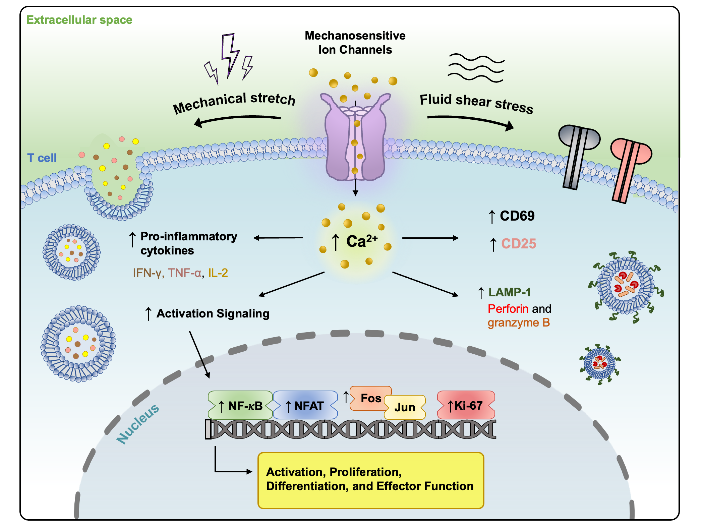
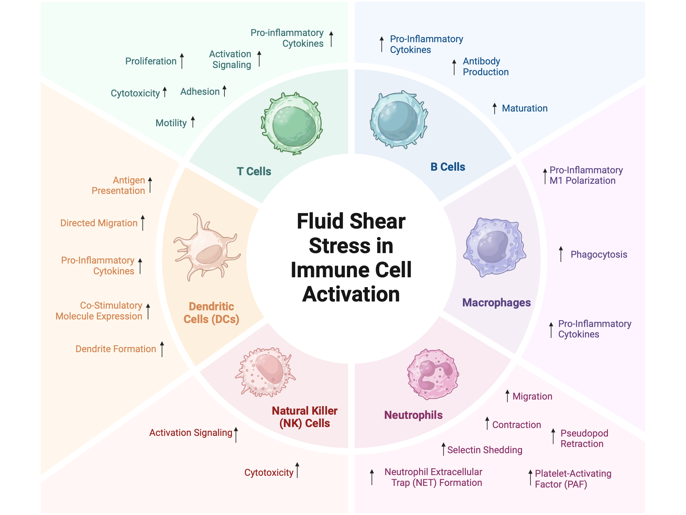
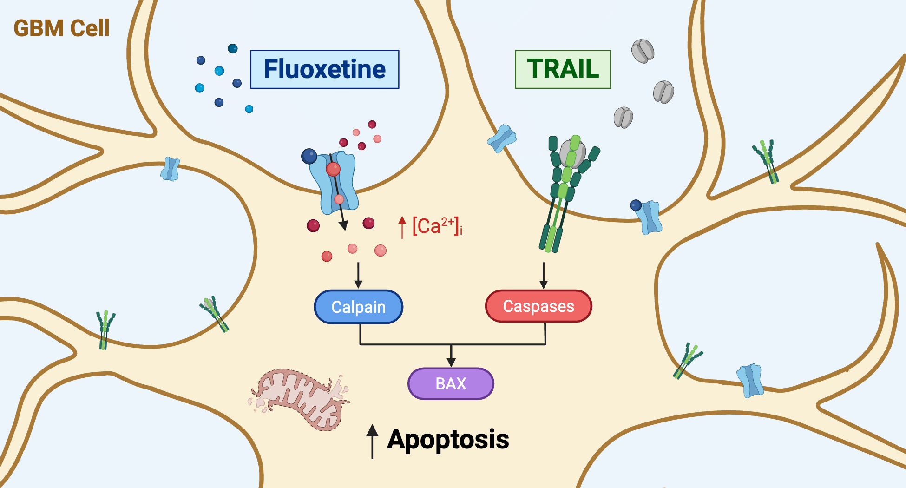
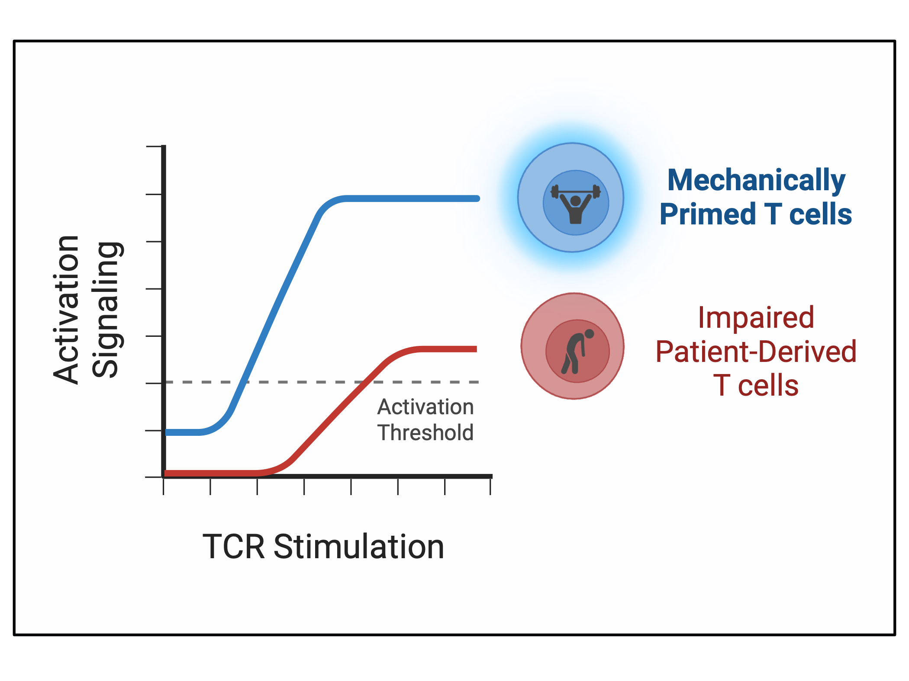

Publications
Featured Publications

Enhanced and Sustained T Cell Activation in Response to Fluid Shear Stress
First-author study showing controlled fluid shear stress enhances and sustains T cell activation, proliferation, and cytotoxicity via Piezo1.
Read the paper →
Immunomechanobiology: Engineering Immune Cell Function with Fluid Shear Stress
First-author review defining the emerging field of immunomechanobiology and its promise for engineering immune cell therapies.
Read the paper →
Fluoxetine Acts as a Calcium-Dependent Sensitizer of TRAIL-Induced Apoptosis in Glioblastoma
Co-first-author study identifying the repurposed drug fluoxetine as a calcium-dependent sensitizer of glioblastoma to apoptosis.
Read the paper →
Fluid Shear Stress Enhances T Cell Priming and Restores Activation in Cancer Patient T Cells
First-author study showing fluid shear stress acts as a co-stimulatory cue to restore activation in T cells from metastatic prostate cancer patients.
Read the paper →Peer-Reviewed Publications
* Co-first author |
-
"Fluid Shear Stress as a Co-Stimulatory Cue to Enhance T Cell Priming and Restore Activation in Cancer Patient T Cells"
Sarna, N.S., Antunovic, M., Hurley, P.J., Schaffer, K.R., King, M.R.
The Journal of Immunology, vol. 215, no. 8, vkag166, 2026. View Here -
"Fluoxetine Acts as a Calcium-Dependent Sensitizer of TRAIL-Induced Apoptosis in Glioblastoma Multiforme"
Desai, S.H.*, Sarna, N.S.*, Luo, A.C., King, M.R.
ACS Omega, 2026. View Here -
"Immunomechanobiology: Engineering the Activation and Function of Immune Cells with the Mechanical Signal of Fluid Shear Stress"
Sarna, N.S., Curry, N.M., Aalaei, E., Kaufman, B.G., King, M.R.
IEEE Reviews in Biomedical Engineering, 2025. View Here -
"Retention of E-Selectin Functionalized Liposome Fanny Packs on Jurkat Cells Following Invasion Through Collagen"
King, S.M.*, Sarna, N.S.*, Ortiz, I.*, Wang, W., Lopez-Cavestany, M., Zhang, Z.
Journal of Immunological Methods, 2024. View Here -
"Enhanced and Sustained T Cell Activation in Response to Fluid Shear Stress"
Sarna, N.S., Desai, S.H., Kaufman, B.G., Hanna, A.M., King, M.R.
iScience, 2024. View Here -
"Chemical and Mechanical Activation of Piezo1 Enhance TRAIL-Mediated Apoptosis in Glioblastoma Cells"
Knoblauch, S.V., Desai, S.H., Dombroski, J.A., Sarna, N.S., Hope, J.M., King, M.R.
ACS Omega, 2023. View Here -
"An Anatomically Correct 3D Printed Mouse Phantom for Magnetic Particle Imaging Studies"
Sarna, N.S.*, Marrero-Morales, L.*, DeGroff, R.*, Rivera-Rodriguez, A., Lui, S., Chiu-Lam, A., Good, H.J., Rinaldi-Ramos, C.M.
Bioengineering & Translational Medicine, 2022. View Here -
"Channeling the Force: Piezo1 Mechanotransduction in Cancer Metastasis"
Dombroski, J.A.*, Hope, J.M.*, Sarna, N.S., King, M.R.
Cells, vol. 10, no. 11, pp. 2815, 2021. View Here -
"Tracking Adoptive T Cell Immunotherapy Using Magnetic Particle Imaging"
Rivera-Rodriguez, A., Hoang-Minh, L., Chiu-Lam, A., Sarna, N.S., Marrero-Morales, L., Mitchell, D., Rinaldi-Ramos, C.M.
Nanotheranostics, vol. 5, no. 4, pp. 431–444, 2021. View Here -
"Long Circulating Tracer Tailored for Magnetic Particle Imaging"
Lui, S.*, Rivera-Rodriguez, A.*, Chiu-Lam, A.*, DeGroff, R., Savliwala, S., Sarna, N.S., Rinaldi-Ramos, C.M.
Nanotheranostics, vol. 5, no. 3, pp. 348–361, 2021. View Here
Patents
-
"Fluid Shear Stress for Ex Vivo Activation of Immune Effector Cells"
Patent Application No: US 2024/0327792 A1 • Issued: Oct. 3, 2024
Inventors: King, M.R.; Hope, J.M.; Dombroski, J.A.; Sarna, N.S.
Conferences & Presentations
Presented at national and international meetings including BMES, the World Molecular Imaging Congress, and the NIH NCI Tissue Engineering Collaborative — with multiple award-winning presentations (1st and 2nd Place Posters; Outstanding Undergraduate Research Award).